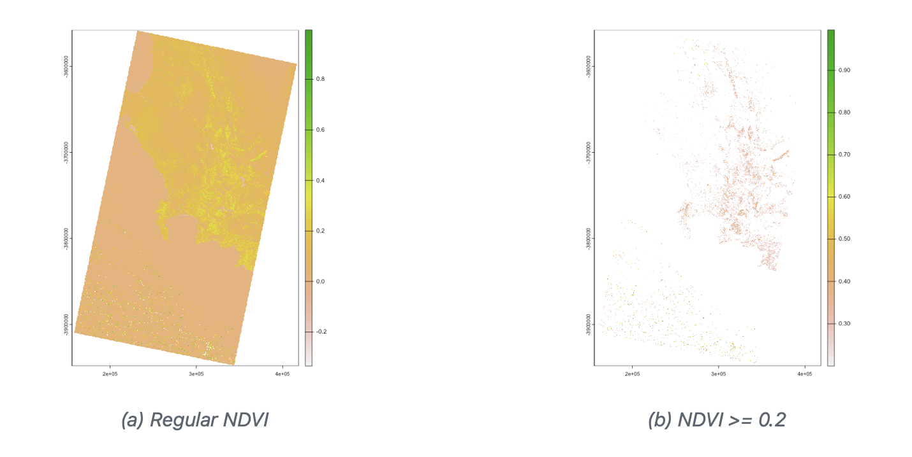
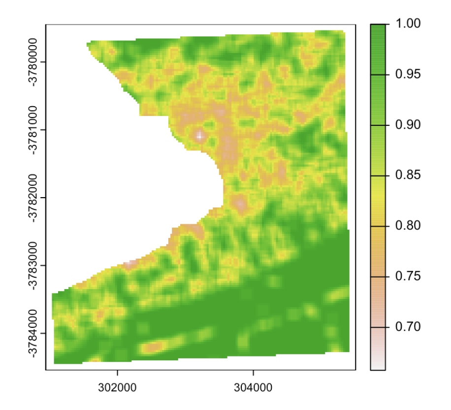

3 Week_3
3.1 Knowledge gain From the Lecture
This week’s study focuses on remote sensing image processing, with the main areas of interest being geometric corrections, atmospheric corrections, orthometric corrections, radiometric corrections and various image enhancement techniques.
3.1.1 Correction
3.1.1.1 Geometric Correction
Geometric correction is the basis of image correction and addresses image distortion due to sensor and other factors. The goal of this correction is to make the image conform to the selected map projection system, adjusting the geometry of the entire image by modelling the relationship between control points (points with known geographic coordinates) on the image and the image coordinates.
3.1.1.2 Atmospheric Correction
Atmospheric corrections are essential to address distortions and inaccuracies in remotely sensed images caused by variations in the Earth’s atmosphere, sensor angles, and terrain. Several different correction methods were learned in class: Relative Atmospheric Correction, Pseudo-Invariant Correction, Absolute Atmospheric Correction, and Empirical Line Correction.
The different methods and characteristics of atmospheric correction have been summarised in the table below:
| Method | Key Steps | Feature |
|---|---|---|
| Relative | Spectrally stable landmarks, linear relations, band operation | Consistency between images |
| Absolute | Complex models for atmospheric effects, surface reflectance | Precise, accurate surface information |
| Pseudo-Invariant | High-quality reference, PIF, linear regression | Stable reference points, reduce atmospheric effects |
| Empirical Line | Ground reflectance, average DN values, linear regression | Utilizes ground data for satellite correction |
3.1.1.3 Radiometric Correction
The role of radiometric correction in adjusting the pixel values of satellite imagery to accurately reflect the radiation at the Earth’s surface has been investigated. The main objective of radiometric correction is to convert the raw digital numbers (DN) acquired into physically meaningful units such as radiance or reflectance. This conversion is critical because DN values are arbitrary and can vary between sensors, acquisitions and platforms, making it difficult to consistently compare and analyse data. By converting DN values to radiance or reflectance, radiometric correction enables quantitative measurements and meaningful comparisons between different images and sensors.

3.1.1.4 Reflection of Collerallation
In the course of study, certain questions arise as to when atmospheric corrections are needed and whether or not the images we buy or otherwise acquire have been atmospherically corrected. In layman’s terms, if we need to use an image that truly reflects the Sun’s radiation for quantitative inversion or to obtain information about the Earth, accurately identify features, etc., then we need to make an atmospheric correction. When we buy an image, the description document says that it is radiometrically corrected. In fact, this radiometric correction refers to the coarse radiometric correction, which is just a systematic atmospheric correction, which has the same meaning as the systematic geometric correction.
At the moment there are many models and methods on the market, since there are how many methods, then there is the problem of method selection. Here is a summary for reference:
- if it is a fine quantitative study, then choose the atmospheric correction method based on the radiative transfer model.
- if you are doing dynamic monitoring, then you can choose relative atmospheric correction or simpler methods.
- if the parameters are missing, there is no choice but to choose the simpler method.
3.1.2 Data Join Sets/Enhancement
3.1.2.1 Data Join Sets
An area may need more than one satellite image to be spliced, using mosaic in the R package for the two datasets to be spliced. When selecting images, try to select two images with similar time and date, due to the different date of the image, the image display is different, the reason may be (cloud cover, sunshine), need to use the image increase technique to operate.
3.1.3 Enhancement
3.1.3.1 Ratio
The ratio is the difference between two spectral bands with a specific spectral response, using CampTown’s data for NDVI (The Normalised Difference Vegetation Index) The Normalised Difference Vegetation Index is based on the fact that healthy and green vegetation reflects more in the near infrared but absorbs in the red wavelengths. Therefore, the red wavelength band is used for the operation in the formula below.
\[ NDVI = \frac{NIR - Red}{NIR + Red} \]
The following figure shows the image after manipulation for NDVI (a. After NDVI Formula, b. Extraction only if NDVI is equal to or greater than 0.2)

This case above can be applied to other index calculations such as NDWI (Normalised Difference Water Index) and NDDI (Normalised Difference Drought Index). These are calculated using the reflectance of different objects in different light waves.
3.1.3.2 Texture
The extraction method of texture features is relatively simple, it is to use an active window to slide continuously on the image, calculate the variance, mean, maximum, minimum and the difference between the two and the information entropy in the window, etc., respectively, to form the corresponding texture image, when the spectral characteristics of the target are relatively close to each other, the texture features can play a positive role in distinguishing the target. When the spectral characteristics of the target are close, the texture features can play a positive role in distinguishing the target. After selecting the appropriate dynamic range of the data and extracting the texture features, the texture features of the image can be highlighted, which is conducive to the extraction of constructive information. Below is an example of a texture treatment for the Cape Town area.

3.2 Application in Literature
Image correction is a critical step in remote sensing to ensure the accuracy and usability of data obtained from satellite or aerial imagery. Radiometric correction involves adjusting digital image data to correct for sensor noise, sensor response variations and atmospheric conditions. Various methods have been proposed for radiometric correction of remote sensing images. Duan(2014) proposed a radiation correction method that replaces artificial targets with standard ground objects, resulting in accurate and precise correction. Tarasenkov(2019) developed a program complex for atmospheric correction of satellite images that considers radiation polarization.
Geometric correction corrects the image so that the proportions are uniform throughout the image. This correction is essential for accurate mapping and measurement tasks. Geometric correction is useful for removing spatial distortion, aligning images of the same sample, and stitching overlapping images together.(Yan et al. 2023). Various methods and devices have been developed for geometric correction, including those based on orthographic images and homonymous point matching. These techniques improve the accuracy and stability of the geometric information in the corrected image(Özciḣan et al. 2023).
Atmospheric correction is necessary for various remote sensing applications to improve the accuracy and reliability of derived information. Different algorithms, such as 6S, FLAASH, DOS, LaSRC, and Sen2Cor, have been evaluated for their performance in atmospheric correction(Muchsin et al. 2023). Atmospheric corrections are essential for a variety of applications such as aircraft navigation, astronomical observations and accurate estimation of cloud heights(Shah, Raval, and Divakaran 2022). It ensures that satellite images provide reliable and accurate results by taking into account atmospheric disturbance(Jonah and Aketi, n.d.).
Image enhancement technology aims to improve the quality and visual effect of remote sensing images. Various methods have been proposed to enhance these images, including histogram modification, transform domain methods, and hybrid approaches. Histogram modification methods focus on modifying the histogram of the input image to achieve a more uniform distribution, resulting in better contrast improvement. Transform domain methods apply specific transforms to enhance the image in the transform domain, leading to better edge enhancement and color preservation(Wang et al. 2023). Hybrid methods, which combine histogram modification and transform domain methods, have shown higher potential in enhancing remote sensing images(Deng et al. 2023). These enhancement techniques are crucial for image interpretation, improving image segmentation accuracy, and facilitating downstream tasks.
3.3 Personal Reflection
As a student diving deep into remote sensing image correction technologies, it truly broadened my knowledge and also deepened my understanding of its complexities and challenges. I realized that although these technologies are crucial for enhancing the quality of image data, implementing them is not as straightforward as it might seem. For instance, radiometric correction sounds advanced, but if we lack precise ground objects for reference, the accuracy of the whole process becomes questionable. This got me thinking about whether we need to develop more adaptive correction methods that can adjust to varying conditions.
Then there’s geometric correction, which indeed seems capable of solving issues with inconsistent image proportions, but if our initial data is not of good quality, or the processing is too complex, how do we balance precision with practical feasibility? It made me realize that sometimes we might need to find a balance between ideal accuracy and operational simplicity.
When it comes to atmospheric correction, I was intrigued by the performance differences of various algorithms under specific conditions. This highlights the importance of selecting the right correction algorithm for reliable data, and also hints at the necessity for more detailed comparisons of algorithms in future research.
Regarding image enhancement technologies, while they can make images appear clearer, I also began to worry about whether these techniques might inadvertently alter some crucial features in the images. This made me recognize the need to carefully maintain the authenticity of images while pursuing visual improvements.
Overall, delving into remote sensing image correction technologies not only taught me about the importance of these techniques but also exposed the various challenges that need to be overcome in practical applications. It made me more aware that alongside technological innovation, a careful evaluation and improvement of existing methods are necessary to ensure we can enhance data quality while maintaining operational feasibility and data authenticity.
3.4 Reference
Deng, Jiqiu, Wuzhou Dong, Yiwei Guo, Xiaoyan Chen, Renhao Zhou, and Wenyi Liu. 2023. “A Novel Remote Sensing Image Enhancement Method, the Pseudo-Tasseled Cap Transformation: Taking Buildings and Roads in GF-2 as an Example.” Applied Sciences 13 (11): 6585. https://doi.org/10.3390/app13116585.
Duan, YL, L. Zhang, L. Yan, Taixia Wu, Yan Liu, and Qiuping Tong. 2014. “Relative Radiometric Correction Methods for Remote Sensing Images and Their Applicability Analysis.” Journal of Remote Sensing 18 (January): 597–617. https://doi.org/10.11834/jrs.20143204.
Jonah, Iyowuna Benjamin, and Taripredo Moses Aketi. n.d. “Atmospheric Correction of Landsat Image | Journal of Environmental and Geographical Studies.” https://gprjournals.org/journals/index.php/JEGS/article/view/120.
Muchsin, Fadila, Kuncoro Adi Pradono, Indah Prasasti, Dianovita Dianovita, Kurnia Ulfa, Kiki Winda Veronica, Dandy Aditya Novresiandi, and Andi Ibrahim. 2023. “EFFECT OF ATMOSPHERIC CORRECTION ALGORITHM ON LANDSAT-8 AND SENTINEL-2 CLASSIFICATION ACCURACY IN PADDY FIELD AREA.” International Journal of Remote Sensing and Earth Sciences (IJReSES) 20 (1): 57–65. https://doi.org/10.30536/j.ijreses.2023.v20.a3845.
Özciḣan, Buğrahan, Levent Doğukan Özlü, Mümin İlker Karakap, Halime Sürmeli̇, Ugur Alganci, and Elif Sertel. 2023. “A Comprehensive Analysis of Different Geometric Correction Methods for the Pleiades -1A and Spot-6 Satellite Images.” International Journal of Engineering and Geosciences 8 (2): 146–53. https://doi.org/10.26833/ijeg.1086861.
Shah, Maitrik, Mehul S Raval, and Srikrishnan Divakaran. 2022. “IGARSS 2022 - 2022 IEEE International Geoscience and Remote Sensing Symposium.” In, 346–49. https://doi.org/10.1109/IGARSS46834.2022.9884900.
Tarasenkov, M. V., A. V. Zimovaya, V. V. Belov, and M. V. Engel. 2019. “25th International Symposium on Atmospheric and Ocean Optics: Atmospheric Physics.” In, 11208:197–202. SPIE. https://doi.org/10.1117/12.2539123.
Wang, Yu, Zhenfeng Shao, Tao Lu, Changzhi Wu, and Jiaming Wang. 2023. “Remote Sensing Image Super-Resolution via Multiscale Enhancement Network.” IEEE Geoscience and Remote Sensing Letters 20: 1–5. https://doi.org/10.1109/LGRS.2023.3248069.
Yan, Shi, Liuwei Sheng, Gu Chao, Liu Hui, Zhang Yang, and Huangchun Hao. 2023. “Multi-Source Satellite Remote Sensing Image Processing and Processing Method Based on Geometric Correction Model.” In, edited by Roumen Kountchev, Kazumi Nakamatsu, Wenfeng Wang, and Roumiana Kountcheva, 293–303. Smart Innovation, Systems and Technologies. Singapore: Springer Nature. https://doi.org/10.1007/978-981-19-7184-6_26.